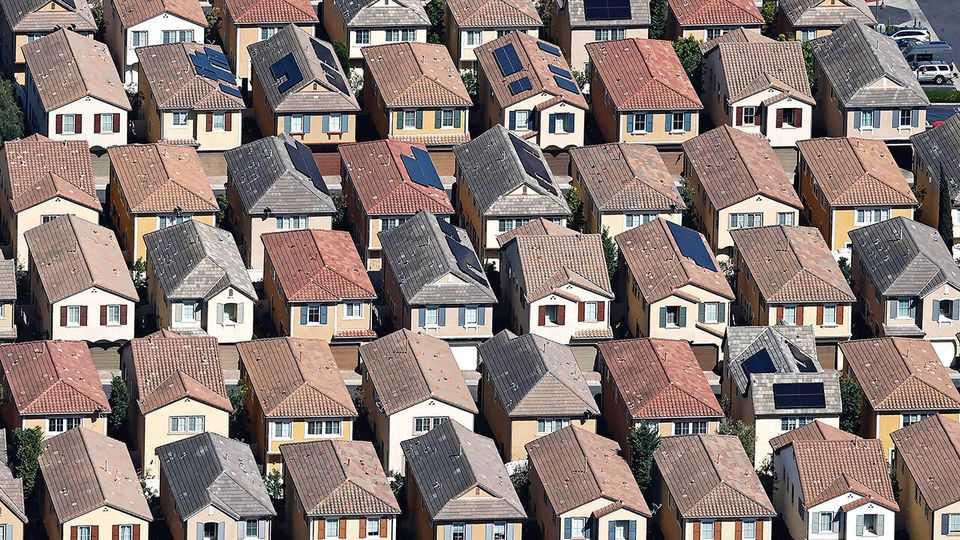
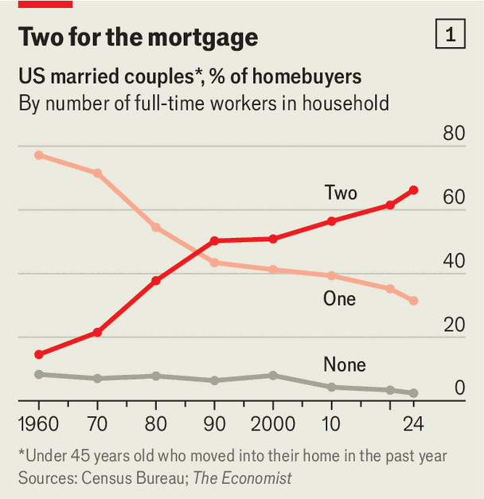
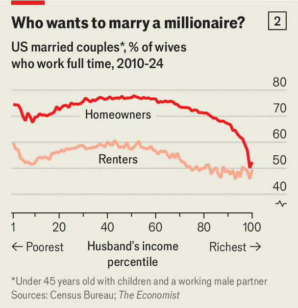

United States | Of Homer and home ownership

“The Simpsons” strikes many Americans as unrealistic. Not because the characters are an odd shade of yellow or because Homer Simpson, an incompetent klutz, is a safety inspector at a nuclear power plant. The real credulity-stretcher is that his family are comfortably middle-class—two-storey home, car, holidays to Itchy & Scratchy Land—on the wages of a single breadwinner with only a high-school education.

Single-breadwinner homebuyers are increasingly rare in America. The Economist looked at census data since 1960 on young married couples who had moved into a new home in the previous year. Whereas in 1960 more than three-quarters of these households had a single breadwinner, today the proportion is less than one in three (see chart 1).
Some of this reflects better job opportunities for women. Since the pioneers of the 20th century started breaking down the barriers that kept so many good jobs male-dominated, their daughters have flocked into the workplace. Between 1960 and 2000 the labour-force participation rate of prime-age women in America surged from around 40% to more than 75%.
Since then, however, that figure has plateaued. Yet the share of single-income homebuyers has continued to fall, from 40% to 30%. The sharpest drop in recent years came between 2012 and 2023, when house prices were rising fast.
Politicians and pundits of both the left and the right often lament the decline of the single-income family. Those on the left applaud a more female-friendly workplace but worry that dual-income families bid up the price of housing, health care, childcare and schooling. Elizabeth Warren, a senator from Massachusetts who co-wrote a book in 2004 called “The Two-Income Trap”, argues that families now need two incomes to get by, and that life is therefore tough for those that only have one.
Many conservatives want to make it easier for women to be homemakers. “If people have the choice, most families would prefer to have one breadwinner and have one parent stay at home with the kids,” claimed Blake Masters, a Republican candidate for the Senate, in a campaign ad in 2021. “You ought to be able to raise a family on one single income.”
About half of American mothers tell pollsters they would rather stay at home than work, roughly double the share who actually do. Their reason for toiling when they say they don’t want to is, presumably, because that work pays. If housing were less costly, and the family budget stretched further, might that tempt some of them to stop or go part-time?

The data are intriguing. We grouped a sample of young couples with children between 2010 and 2024 by the husband’s earnings. In an imaginary scenario in which women worked purely because they loved working, then how much their husband made would probably have no effect on whether they kept punching the clock. In the real world, our data show that past a certain point, their full-time labour-force participation rate falls when their husband’s income rises. And the drop-off is far sharper in homeowning families than among renters (see chart 2).
In homeowning families where the husband earns around the median wage, nearly 80% of wives work full-time. In the top third, where the husband earns more than $100,000, this number starts to dip. When his pay hits $500,000, it falls to around 50%, roughly the same as the share of mums who tell pollsters they want to work.
All this suggests that Americans have to earn rather a lot before they feel that one income can support the lifestyle they desire. And housing costs clearly play a hefty role. This is not a straightforward story of hardship, as some pundits claim, but one of trade-offs. Many people enjoy their jobs. And what counts as a good-enough lifestyle has changed over the decades. Houses in America today are twice as large as they were in the 1950s, not to mention vastly better-equipped and more comfortable. Still, if it were easier to build, they would be cheaper. And perhaps America might have more families like the Simpsons. ■
Stay on top of American politics with The US in brief, our daily newsletter with fast analysis of the most important political news, and Checks and Balance, a weekly note that examines the state of American democracy and the issues that matter to voters.